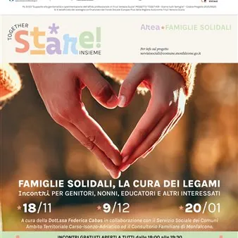

da mer 18 nov a mer 20 gen · dalle 18:00
TogetherSTAREinsieme - Famiglie solidali, la cura dei legami
In un tempo in cui la coesione sociale e l’ascolto sono sempre più centrali per la vita comunitaria, seppur di difficile realizzazione, prosegue a Monfalcone il progetto "TogetherSTAREinsieme", un percorso che offre a genitori, nonni, educatori e tutti gli interessati strumenti…
 Indicazioni
Indicazioni
- Costi e prenotazioni
- Costo non indicato · Prenotazione non indicata
- Programma
- Programma da verificare. Apri la fonte ufficiale per orari e possibili aggiornamenti.
- In caso di maltempo
- Nessuna indicazione specifica pubblicata.
- Note
- Acquisito automaticamente dalla fonte.
L’EVENTO
Descrizione completa
In un tempo in cui la coesione sociale e l’ascolto sono sempre più centrali per la vita comunitaria, seppur di difficile realizzazione, prosegue a Monfalcone il progetto "TogetherSTAREinsieme", un percorso che offre a genitori, nonni, educatori e tutti gli interessati strumenti concreti per rafforzare i legami di comunità e promuovere una cittadinanza educante, dove la crescita dei giovani diventi una responsabilità condivisa tra istituzioni, scuole e cittadini.
Il progetto accompagnerà le famiglie fino al 2028, con attività dedicate alla genitorialità, al confronto e alla solidarietà intergenerazionale.
Tra le prime iniziative, figura “Famiglie solidali, la cura dei legami”, un ciclo di incontri tenuti della pedagogista e mediatrice familiare Dott.ssa Federica Cabas, rivolti a genitori, nonni, educatori e tutti gli interessati a rafforzare i legami con i figli, così come il dialogo e il supporto; il tutto in un clima di effettiva collaborazione e fiducia reciproca.
Il primo appuntamento è previsto per mercoledì 18 novembre 2026, dalle ore 18:00 alle ore 19:30, presso il Ricreatorio “Mons. O. Foschian”, in via Isonzo 27.
Le date successive sono il 9 dicembre 2026 e il 20 gennaio 2027.
La partecipazione è libera e gratuita, senza obbligo di prenotazione.
Il progetto "TogetherSTAREinsieme" è promosso dal Comune di Monfalcone in collaborazione con il Servizio Sociale dei Comuni dell'Ambito Carso-Isonzo-Adriatico,la Cooperativa Sociale Murice e la Cooperativa Duemilauno ed è cofinanziato dal Fondo Sociale Europeo Plus (FSE+) della Regione Autonoma Friuli Venezia Giulia.
IL PROGRAMMA
Programma e orari
Appuntamenti raccolti dalle fonti elencate. Dove manca un orario, non è ancora disponibile in questa scheda.
Programma pubblicato
- Dal 2026-11-18 al 2027-01-20
INFORMAZIONI UTILI
Prima di partire
- Controllare la fonte prima di partire.
ORGANIZZAZIONE